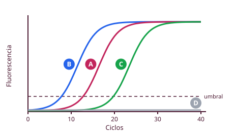
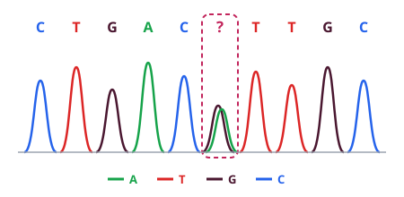
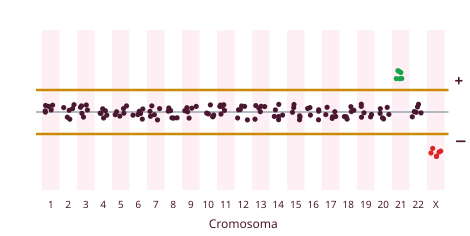

Son técnicas para identificar marcadores en el material genético. Sirven para: diagnóstico prenatal, farmacogenómica (elegir tratamiento y minimizar efectos adversos: medicina personalizada), diagnóstico de enfermedades hereditarias (evolución y pronóstico) y de enfermedades infecciosas. Van de lo más general (cariotipo) a lo más concreto (secuenciación).
Sirve para amplificar un fragmento concreto de ADN y obtener suficientes copias para secuenciarlo y detectar mutaciones, polimorfismos o pequeñas deleciones/inserciones. Usos: enfermedades infecciosas, criminalística y enfermedades hereditarias.
ADN molde · dos cebadores (secuencias cortas conocidas que delimitan el fragmento) · ADN polimerasa termoestable · nucleótidos (dNTP) · termociclador (aparato que cambia la temperatura en cada ciclo).
| Paso | Temperatura | Qué ocurre |
|---|---|---|
| 1. Desnaturalización | ≈ 94-95 °C | Se separan las dos cadenas |
| 2. Hibridación (anillamiento) | ≈ 50-65 °C | Los cebadores se unen a sus secuencias complementarias |
| 3. Extensión | ≈ 72 °C | La polimerasa sintetiza la cadena nueva |
En cada ciclo se duplica el número de copias (crecimiento exponencial). Se repite hasta unos 40 ciclos.
| Técnica | Para qué |
|---|---|
| RT-PCR | Partir de ARN cuando no hay ADN: la transcriptasa inversa lo pasa a ADN complementario (ADNc, que no tiene intrones). Es cualitativa |
| PCR en tiempo real (qPCR) | Cuantificar: sondas fluorescentes muestran la amplificación en cada ciclo |
| RT-qPCR | Cuantificar un virus de ARN (ej.: SARS-CoV-2) |

La curva empieza plana, luego sube de forma exponencial y acaba en meseta. En la qPCR, cuanto más virus hay, menos ciclos hacen falta para que la fluorescencia supere el umbral (el valor Ct es menor). Una curva plana = negativo.

Secuencia miles o millones de fragmentos a la vez: paneles de genes, exoma (todos los exones, whole-exome) o genoma completo (whole-genome). Se usa para enfermedades hereditarias, dianas terapéuticas (cáncer) y medicina personalizada.
| Técnica | Qué hace | Qué detecta |
|---|---|---|
| Cariotipo | Fotografía los cromosomas en metafase (bandas G) y los ordena por tamaño y morfología en un ideograma | Cambios de número (trisomías) y alteraciones grandes (deleciones, inserciones, translocaciones). Diagnóstico prenatal |
| FISH | Se desnaturaliza el ADN y se hibrida con una sonda marcada con fluorocromos, que marca un cromosoma entero o una zona | Deleciones (falta el punto de color) o duplicaciones (punto doble). Dice qué falta, no por qué |
| Array CGH | Compara el ADN del paciente (verde) con un ADN control (rojo) hibridados sobre un chip con sondas | Ganancias y pérdidas en todo el genoma (no las translocaciones equilibradas) |
| Array SNP | Igual, pero con sondas de nucleótidos concretos | Cambios de un nucleótido en todos los cromosomas |

Array CGH: entre las dos líneas está la normalidad (amarillo = igual que el control). Sube = sobra (verde, más ADN del paciente: duplicación). Baja = falta (rojo, más ADN control: deleción). Una pérdida parcial puede indicar mosaicismo.
¿Sospecha de trisomía en un feto? → cariotipo (o FISH si se necesita rapidez). ¿Cuánto virus tiene un paciente? → RT-qPCR. ¿Qué mutación concreta tiene un gen? → PCR + Sanger. ¿Muchos genes a la vez? → NGS. ¿Pequeñas ganancias o pérdidas en todo el genoma? → array CGH.
Para el cariotipo se cultivan células (linfocitos, líquido amniótico o vellosidades coriónicas) y se detiene la división en metafase con colchicina. En la electroforesis en gel el ADN, que tiene carga negativa, migra hacia el polo positivo y se separa por tamaño (los fragmentos pequeños avanzan más).